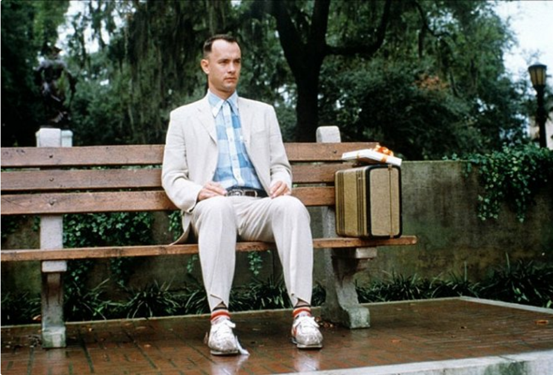
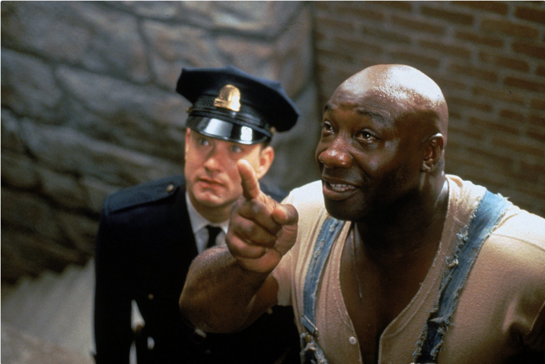
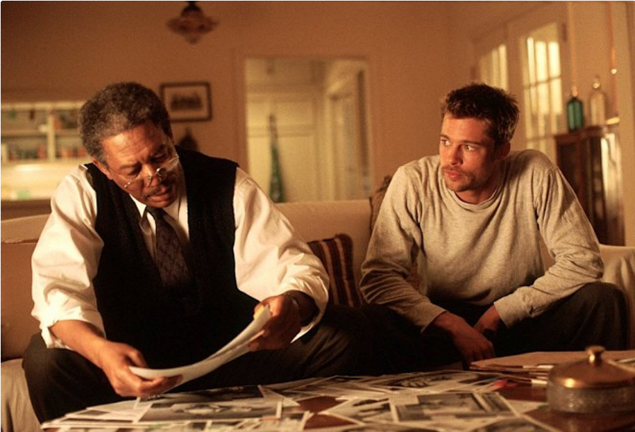
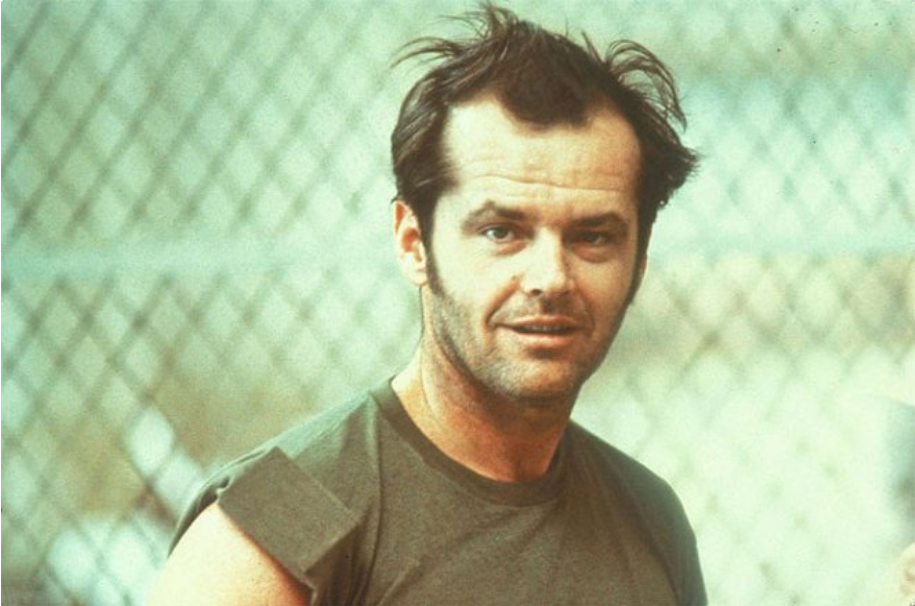

Hlavní hrdinovia: Red a Andy
Hlavní hrdinovia: Red a Andy | Poradie | Názov filmu | Rok vydania | Hodnotenie v percentách |
|---|---|---|---|
| 1. |
Vykúpenie z väznice Shawshank Hlavní hrdinovia: Red a Andy |
1994 | 95,3 % |
| 2. | Forrest Gump Hlavní hrdina: Forrest Gump | 1994 | 94,5 % |
| 3. | Zelená míľa Hlavní hrdinovia: Paul a John | 1999 | 92,9 % |
| 4. | Sedem Hlavní hrdinovia: William a David | 1995 | 92,5 % |
| 5. | Prelet nad kukučím hniezdom Hlavní hrdina: Randle | 1975 | 92,4 % |
| 6. | Schindlerov zoznam | 1993 | 92,3 % |
| 7. | Krstný otec | 1972 | 91,8 % |
| 8. | Dvanásť rozhnevaných mužov | 1957 | 91,4 % |
| 9. | Nedotknuteľní | 2011 | 91,3 % |
| 10. | Pelíšky | 1999 | 91,2 % |
| 11. | Terminátor 2 | 1991 | 90,2 % |
| 12. | Pulp fiction | 1994 | 90,7 % |
| 13. | Pán prsteňov: Spoločenstvo prsteňa | 2001 | 90,6 % |
| 14. | Mlčanie jahniat | 1991 | 90,5 % |
| 15. | Vtedy na Západe | 1968 | 90,5 % |
| 16. | Temný rytier | 2008 | 90,4 % |
| 17. | Gran Torino | 2008 | 90,3 % |
| 18. | Matrix | 1999 | 90,2 % |
| 19. | Dobrý, zlý a škaredý | 1966 | 90,0 % |
| 20. | Rain Man | 1988 | 89,9 % |
Mladého bankára Andyho Dufresneho odsúdia za vraždu svojej ženy a jej milenca. Čaká naňho dvojnásobný doživotný trest v obávanej väznici Shawshank. Pri snahe prispôsobiť sa novému životu sa zblíži s Redom, ktorý si tu odpykáva svoj doživotný trest už dvadsať rokov. Silu prežiť toto peklo Andy čerpá z tajného sna a nádeje, že sa raz dostane na slobodu...